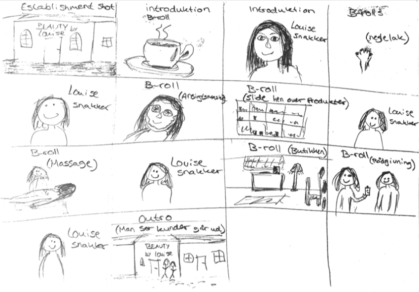

Præmis: (En sætning, der udtrykker det man vil med sin historie)
Igennem en video vil virksomheden gerne fremstå mere nærværende for kunderne, og tiltrække nye kunder. Det skal signalere at, det her et professionelt, trygt sted, præget af louises personlighed så kunderne føler sig trygge og får den rette behandling.
Log-line: (Handlingen fortalt i to sætninger)
Igennem et interview bliver der skabt en stemning og et indblik i virksomheden Beauty By Louise. Der bliver understøttet af b-rolls, som er med til at motivere seeren til at blive kunde hos Beauty By Louise.
Interview spørgsmål:
Video om mulighederne for behandling
Nedenstående storyboard er for vores interview med Louise
Plan for video-optagelse:
Indsættelse af originale klip og uredigeret elementer
Indsættelse af færdig video + beskrivelse af hvad vi har gjort
I video processen, startede vi alle i gruppen med at sætte os ned og blev enige om hvordan filmen skulle forløbe sig. Derfor skrev vi alle de klip ned vi ville have, b-rolls, lavede interview spørgsmål og udarbejdede et færdigt storyboard så vi alle vidste hvad der skulle ske. Det gjorde det super nemt at filme, og det gjorde processen meget effektiv. De vanskeligheder vi har haft har været under produktionen af filmen, hvor vi følte der var for lidt arbejde til 4 mennesker. Der var kun 1 der kunne stå med kameraet og 1 til at diagere og interviewe. Derudover har det været svært at sidde flere om at klippe filmen.